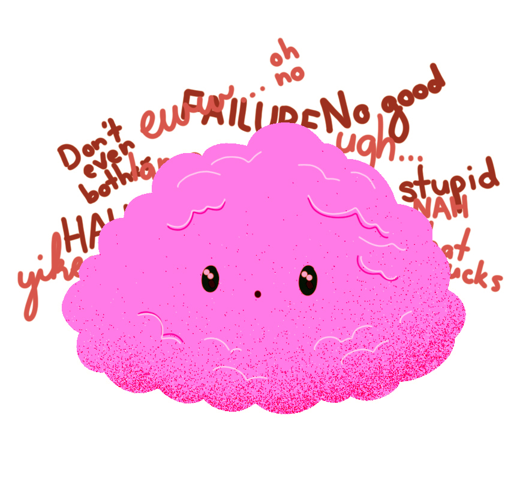
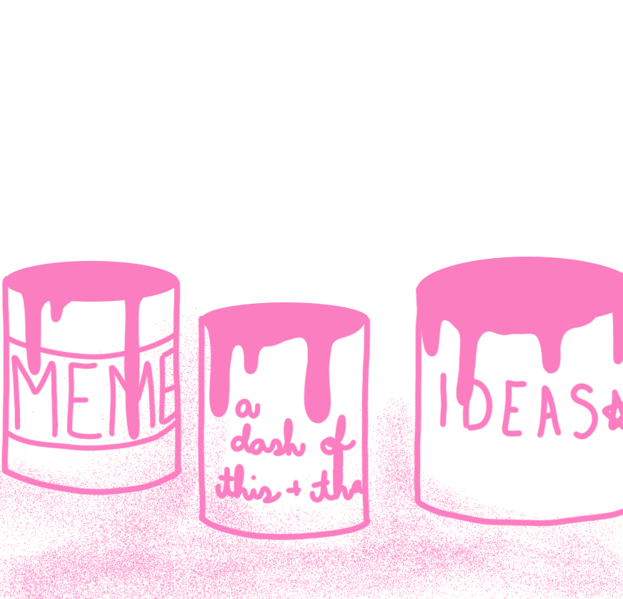
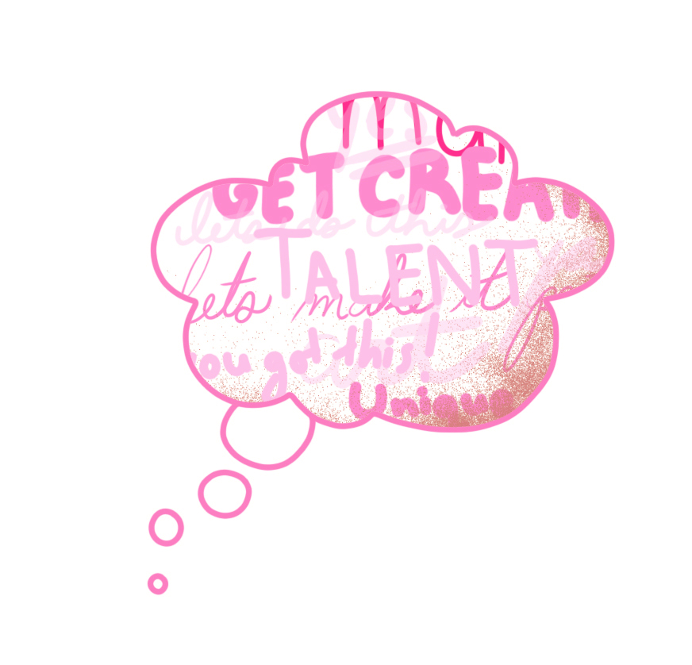

A Shifting House Next to a River of Knowledge
You know why stuff seems scary in most cases? Because our brain is tricking us into thinking it's way worse than it actually is. Power of the mind, am I right?
That's how web design has always been for me. I hear anything about code, and I immediately wanna run for the hills... But a different perspective made me want to try it out with a different approach! What if instead of this giant wall of text, it was just a base little house that I could repaint and decorate however I wanted, add in some shelves and maybe some plants that grow over time into something amazing, and it becomes this awesome thing I made all on my own! I could make it so personal! And to be fair that really does sound like a "well, duh..." kind of moment, but somehow it never connected in my mind how creative I could be even on the web right from the get go.
I'm an artist, afterall. A creative thinker. So why am I not thinking outside the box when it comes to web designs and layouts? Heck, that's what I might be hired for one day, right? So... let's get creative! Slap some colour here, throw some hyperlinks there, honestly f*ck it! I'll never learn if I don't try and fail and just try again. So... here's me telling myself to just go with it and see what creative stuff I can do instead of limiting myself over here.
